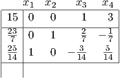

Due: Friday, November 22, 2019, in class.
Penalty for late homeworks: 25% for each day or part of a day.
Answer the following five questions from Kupferschmid, Chapter 7 (available on LMS), plus the additional
question. In addition, read Sections 7.1–7.7 from the text.
- 7.10.16. Note: The solution xLP * to the LP relaxation is given in the picture on page 261.
When you branch, you can solve 2-dimensional subproblems, so you can solve the subproblems
graphically. For example, when solving the branch with x1 ≥ 2, the solution to the relaxation
will have x1 = 2, so you can solve a problem in just x2 and x3; if you branch further (eg, on
x3 ≥ 1), then you have to unfix x1 and set x3 = 1 in the LP relaxation.
- 7.10.37. Make sure your constraint is linear!
- 7.10.39 (a)
- 7.10.40 (a) and (b)
- 7.10.43. Note: You don’t need to consult the cited reference [73].
- Gomory: The LP relaxation of an integer program has optimal tableau

-
a.
- Derive a Gomory cutting plane from each constraint and verify that it is violated by the
solution to the current LP relaxation.
-
b.
- Add the Gomory cut corresponding to the second constraint and reoptimize. What do
you conclude?
You will lose 2 points if your homework is not stapled.
Working these and other questions will help you master the material and be ready for the
exams.
| John Mitchell |
| Amos Eaton 325 |
| x6915. |
| mitchj at rpi dot edu |
| Office hours: Tuesday Nov 12, noon–2pm; Wednesday Nov 13, 11am–1pm; Tuesday Nov 19, 2–4pm. |
| Jun Tan office hours: Thursdays 1-2pm, AE 430. |